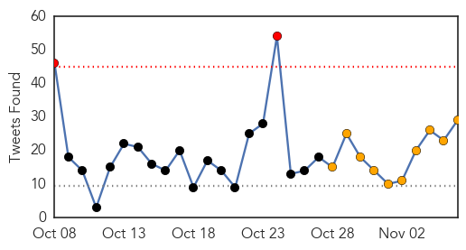
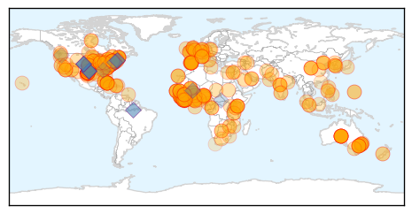

Ebola
30-Day Web Trend
11 alerts, 9 warnings
30-Day Twitter Trend
2 alerts, 10 warnings

Article Locations
Article Confidences
Top Articles:
- 1.000
- Pentagon spent millions for airborne Ebola vaccine
- 1.000
- Ebola cases rise sharply in Sierra Leone
- 1.000
- Ebola surging in Sierra Leone: United Nations
- 1.000
- Latest Ebola News: Australia to contribute up to USD 20 mn for Ebola fight
- 1.000
- NYC Ebola Patient Passing Time in Isolation Playing Banjo
- 1.000
- Virus symptoms, history explained
- 1.000
- Texas hospital worker to be cleared from Ebola Friday
- 1.000
- Ebola news roundup: Spanish nursing assistant released, White House seeking $6 billion
- 1.000
- Ebola surging in Sierra Leone amid lack of treatment centers: U.N.
- 1.000
- Ebola expert warns of tragedy in British hospitals due to safety failings
- 1.000
- Liberia Situation Improving As Sierra Leone Sees New Cases
- 1.000
- NYC Health Department Monitoring 357 People for Ebola Symptoms
- 1.000
- UW Ebola preparedness plans reflect changing situation
- 1.000
- German doctors cure Ebola patient with heart drugs
- 1.000
- Untitled Article
- 1.000
- Can Ebola numbers be trusted?
- 1.000
- Ebola surging in Sierra Leone amid lack of treatment centres: United Nations
- 1.000
- Ebola outbreak: Get up to speed
- 1.000
- Md. to stop providing updates on Ebola investigations, unless cases confirmed
- 1.000
- The Fight Against Ebola: U.S. researchers plead for access to virus samples
- 1.000
- Ebola surging in Sierra Leone amid lack of treatment centres - U.N.
- 1.000
- The Ebola Outbreak In Texas Is Officially Over
- 1.000
- Is quarantine merited for Ebola-exposed health-care workers? The science says no
- 1.000
- NYC Ebola Patient Passing Time in Isolation Playing Banjo: Reports
- 1.000
- Is quarantine merited for Ebola exposed? - National
- 1.000
- What is Ebola? – Coyote Student News at the College of Southern Nevada
- 1.000
- If Ebola hits Pakistan – The Express Tribune Blog
- 1.000
- Experimental Ebola Vaccines Being Tested In Mali
- 1.000
- Ebola surging in Sierra Leone amid lack of treatment centres - U.N.
- 0.999
- U.N. blames rich nations for Ebola outbreak
- 0.999
- The last person connected to the Texas Ebola patients will be cleared Friday
- 0.999
- The world is still far from the finish line on Ebola
- 0.999
- Regional health officials plan Ebola response
- 0.999
- No Ohioans infected after Ebola scare
- 0.999
- Delays hinder Ebola genomics
- 0.999
- Australia to Fund Ebola Center, Clinic Staff in Sierra Leone
- 0.999
- Texas wrapping up monitoring linked to Ebola death
- 0.999
- Ebola watch period nears end in Texas
- 0.999
- WHO elects new Africa director amid Ebola epidemic
- 0.999
- ECOWAS Summons Emergency Meeting On Ebola
- 0.999
- Government did not accept EU offer to treat infected health workers
- 0.999
- World Bank pledges additional $100m to speed new health workers to Ebola-stricken countries
- 0.999
- State of Ebola Address
- 0.999
- North Carolina suspect Ebola patient tests negative repeatedly
- 0.999
- UN says experimental Ebola vaccine trials in West Africa could begin by January - Xinhua
- 0.999
- Ebola surging in Sierra Leone amid lack of treatment centres: U.N
- 0.999
- UPDATE 1-WHO revises Ebola death toll lower, virus slowing in Liberia
- 0.998
- Hunterdon County prepares for Ebola
- 0.998
- City Monitoring 357 People for Ebola Symptoms
- 0.998
- Louisiana bars Ebola researchers from conference
Showing top 50 articles...
Top Tweets:
- 0.973
- 2/2 Tekmira says US DoD is making a batch of Ebola drug targeting West-African outbreak virus. Ready in early Dec; for RCT in West Africa
- 0.968
- Ebola outbreak: UN 'lacks resources' to fight deadly virus. http://t.co/WUh2cqqsxR
- 0.920
- WHO Lowers Ebola Death Toll, Virus Slowing In Liberia. http://t.co/zRBsnBBA3u
- 0.912
- SMS service tackles Ebola in Sierra Leone, expands in West Africa ebolaresponse@TR_Foundation http://t.co/obipns6uo2
- 0.910
- Ebola cases rise sharply in Sierra Leone. http://t.co/ls0dou7f9Q
- 0.910
- Ebola cases rise sharply in Sierra Leone http://t.co/qGGvOuEV7H
- 0.875
- RT: WHO revises Ebola death toll lower, virus slowing in Liberia http://t.co/TT0w5Pd8Ty via
- 0.857
- RT: WHO and epidemiologists work on a transmission tree of the Ebola outbreak in Koinadugu, Sierr... https://t.co/K2FyYDP2cE
- 0.846
- RT: "Ne touchons nos malades. Ne touchons pas mourants..." AfricaStopEbola chante & sensibilise contre l'Ebola: http://t.…
- 0.837
- Ebola Surging In Sierra Leone Amid Lack Of Treatment Centers: UN. http://t.co/YmkQXpoZFb
- 0.835
- Tekmira Pharma admits its Ebola drug has been given to several people with suspected or confirmed Ebola. Says data being collected 1/2
- 0.832
- RT: We’ve curated some of the best information about the Ebola outbreak from around the web. Have a look: http://t.co/TVn4K1…
- 0.827
- Is the Ebola Epidemic Ending in Africa? @nytimeswell ebolaresponse http://t.co/cbxV8DzE81
- 0.820
- RT: NEJM: Clinical presentation of patients with Ebola virus disease in Conakry, Guinea http://t.co/MLMYXNR0xC
- 0.811
- hey UW Public Health I see that you are tweeting Ebola, check out http://t.co/NJncI8Fm5n for up to the minute Ebola info.
- 0.791
- Clinical presentation of Ebola pts, via; POTUS seeks $6B for Ebola fight. HealthSecurity http://t.co/H1JhGDbj22
- 0.781
- hey Medical Health News I see that you are tweeting Ebola, check out http://t.co/NJncI8Fm5n for up to the minute Ebola info.
- 0.768
- Updated article released: Modeling the Impact of Interventions on an Epidemic of Ebola in Sierra Leone and Liberia http://t.co/BThZ7PxJIk
- 0.763
- hey L.A. Times Health I see that you are tweeting Ebola, check out http://t.co/NJncI8Fm5n for up to the minute Ebola info.
- 0.763
- hey L.A. Times Health I see that you are tweeting Ebola, check out http://t.co/NJncI8Fm5n for up to the minute Ebola info.
- 0.753
- Ebola news: UN "lacks resources to fight deadly outbreak" http://t.co/3viMwEiJDP
- 0.741
- After the ebola outbreak we might have a huge problem of malaria when the outbreak ends which will be a major setback (paraphrasing)
- 0.736
- Panic, Paranoia, and Public Health — The AIDS Epidemic's Lessons for Ebola ebolaresponse http://t.co/pp46NEKEot
- 0.732
- Chernor Bah and Judith Bruce discuss the indirect impact of Ebola on girls in Sierra Leone, over on Ebola Deeply http://t.co/NoezxfxwFe
- 0.719
- Dr. Alonso - In terms of malaria, numbers as of 2013 in 3 West African countries 21k deaths last year, more than ebola
- 0.715
- RT: How marriage, burial and complex social obligations continue the spread of Ebola in rural Sierra Leone. HT | http:…
- 0.704
- RT: Ebola surging in Sierra Leone amid lack of treatment centers: U.N. http://t.co/sdWuqcMljb
- 0.670
- Ebola and lack of treatment units hit Sierra Leone http://t.co/D4GNKhnDsL
- 0.668
- Sierra Leone: Journalist arrested after questioning official Ebola response. http://t.co/xtKlcgsqJv
- 0.666
- Dallas-area officials, health experts discuss lessons of recent Ebola crisis. http://t.co/eX2dI0til7
- 0.665
- The Ebola information you should know: http://t.co/oBDwIrDlsa You can help spread fact-based information by sharing.
- 0.659
- Question for Dr. Alonso from Dr. Carter - What do you see as a challenge between Ebola and Malaria in the Western African countries?
- 0.650
- Liberia, Sierra Leone and Guinea are stunning countries. Curbing Ebola means more people will get to see them, says Unite4WestAfrica
- 0.648
- La Suisse teste deux vaccins contre Ebola http://t.co/XNWz8JSHVc
- 0.639
- Liberia. Ebola wreaks havoc in Liberia ebolaresponse http://t.co/xvyTTDeE79
- 0.631
- Liberia. Treating Those Treating Ebola in Liberia ebolaresponse http://t.co/6lbdX3HJWM
- 0.625
- .@Laurie_Garrett Flu often takes off in US after family gatherings for US Thanksgiving. Will Liberian Thanksgiving do same for Ebola?
- 0.618
- RT: More on safe burials+stopping Ebola: UNMEER states that Sierra Leone needs 44 more burial teams by Dec 1 to ensure 100% cover…
- 0.614
- RT: Waarom staat NL'se bijdrage hier niet tussen? Ebola: "Meer dan 35 miljoen vrijgemaakt." Wat is beloofd of betaald? http://t…
- 0.614
- Ebola Cases Seen Declining In Liberia, WHO Says In New Update. http://t.co/EEVyPUZKl5
- 0.612
- hey UCI Medical Library I see that you are tweeting Ebola, check out http://t.co/NJncI8Fm5n for up to the minute Ebola info.
- 0.611
- RT: Erin Schillberg, an MSF epidemiologist from Winnipeg, talks about victories, deaths in Ebola battle in Sierra Leone http:/…
- 0.609
- Sierra Leone. First British Ebola treatment facility opens in SierraLeone ETC http://t.co/ahGMsJRhRt
- 0.608
- Ebola in graphics. http://t.co/g9Oi9zqUNn
- 0.608
- Ebola in SierraLeone: Stigmatisation ebolaresponse http://t.co/ppmKxXAKOq
- 0.607
- RT: [VOA] Officials: Number of New Ebola Cases in W. Africa Declining http://t.co/okZ7NsklqK EBOLANEWS
- 0.601
- Md. to stop providing updates on Ebola investigations, unless cases confirmed. http://t.co/RsOlimWv5v
- 0.593
- RT: In new report, clinical syndromes of confirmed Ebola cases in Guinea, during the stages of outbreak, are described. http://t.co/…
- 0.588
- hey SOSElderCare_Modesto I see that you are tweeting Ebola, check out http://t.co/NJncI8Fm5n for up to the minute Ebola in
- 0.588
- hey SOSElderCare_Modesto I see that you are tweeting Ebola, check out http://t.co/NJncI8Fm5n for up to the minute Ebola in
Showing top 50 tweets...
Measles
30-Day Web Trend
0 alerts, 0 warnings
30-Day Twitter Trend
0 alerts, 0 warnings

Article Locations

Article Confidences

Top Articles:
-
No articles found for Nov 06, 2014
Top Tweets:
-
No tweets found for Nov 06, 2014